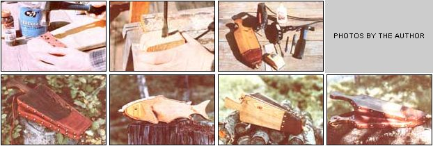

Noticing that the coals in the woodstove were ash gray, I reached for my trusty bellows. After just two strokes of the handcrafted puffer, the embers glowed a cheerful red. And-warmed by the revived fire?I resumed totaling up the profits of my homestead bellowsmaking enterprise ... a business that's contributed both physically and monetarily to my comfort.
Now I'll admit I'm pretty clanged enthusiastic about my little cottage industry ... but I'm not at all miserly about it. In fact, I'm here to tell you that anyone who delights in the feel of genuine wood and leather, enjoys building practical tools that also please the eye, and doesn't mind making extra money while indulging in these inclinations is a prime candidate for a successful bellows business. You won't have to "blow" (sorry about that!) a lot of your cash getting started, either, since most of the raw materials can be had for the asking, and many of you probably own all the tools you'll need. It's a good bet that-in very short order-your own distinctive line of puffers could be blowing fires to life in fireplaces and woodstoves throughout your neck of the woods ... and putting cash into your pocket in the process.
Some of you have already seen the articles on basic bellowsmaking that appeared back in MOTHER NO. 38, page 65, and MOTHER NO. 49, page 120. However, if you're going into the business, you'll need to offer your buyers a broad selection of styles and sizes. Mastering the following techniques will enable you to build and market quantities of these windy wonders ... and to do so in less time than you'd ever imagine.
The first step is to check your toolshed for the following: a jigsaw, a saber saw, or a band saw ... a brace or a drill and some 1/2" and 5/8" bits ... and a rasp or a file (a four-way rasp is helpful). You'll also need a hammer, some sandpaper, a sturdy pair of scissors, and some general-purpose glue. For openers, you might want to borrow whatever tools you don't have on hand ... and then later purchase your own with the proceeds of your early sales.
Once the necessary implements are gathered together, search your pile of scrap wood for boards 3/4 " to I" thick and a minimum of 6" wide and 14" long. (If the planks you find are worn and weathered, that's all the better ... because I'll tell you exactly how to give the most ragged piece of barn siding an appealing finish.)
When you have your tools and boards located, it's time to grab the phone book, hop into the old buggy, and head for town ... stopping at every furniture upholstery shop along the way. Introduce yourself to the proprietors of those establishments, spend a couple of moments chatting about the coming cold months (a perfect lead-in to a description of your business), then ask them about their scrap piles ... consisting of those leftover pieces of high-quality leather and vinyl that were just too small for use on another project. The original customer already paid plenty for that material, but its scraps usually end up stuffed in big boxes, ready for the dump.
As you've probably guessed, your aim will be to propose a swap: You'll volunteer to clean up the mess for the pleasure of carting it away! Many shop owners will jump at the opportunity to see the eyesore disappear. And if anyone seems hesitant, you might offer to trade the whole pile for one of your finished bellows. Finally, if you encounter an individual who insists upon getting some cash, make a laughably low bid for the stuff. I've never had to pay more than $5.00 for a pile of material (and that was for a scrap heap big enough to produce 40 "blowers"!).
Then, as you head for the door with your treasures, ask if you can buy a bunch of decorative upholstery tacks. Most shops have box after box (each typically holding 1,000, which is enough to decorate over 20 bellows) of the fancy fasteners ... in every style and color imaginable. A proprietor will probably sell you a box at (or a little above) wholesale. I've found that the brasscolored metal tacks (in size 1 or 2) are particularly good for use on most bellows, and a whole box of them will usually go for about $10 or $12 ... which is approximately a third of the cost of buying them by the card at the hardware or variety store. In fact, if the upholstery folks take a shine to you, they'll often throw in a handful of standard 1/2" carpet tacks (another necessity) for almost nothing!
Your next stop should be the best "bargain" hardware store you know of. Pick up a quart of contact cement (or a gallon, if you're really counting on a lot of business). Don't buy the little 4-ounce bottles ... their cost per ounce is high, and they'll cat up your profits in no time!
With that out of the way, you have yet another obligatory stop ... at the largest retail/wholesale plumbing or air-conditioning supply house in your area. Tell the folks there that you make and sell bellows, and that you want their best price for 1/2" X 1/2" male-to-male compression pipe couplers and 1/2" brass flare nuts. These items are used to make decorative nozzles for your blowers, with next to no manufacturing time required on your part. Get one coupler and one flare nut for every bellows you plan to make. Insist, too, on the classy-looking "extended" flare nuts with the smooth, finish, as shown in the photos. (You may want to comparison shop for these . . . I've found them priced from 39c to 95c apiece.) Male-to-female air nozzles intended for spray equipment will also serve as handsome tips for your blaze blowers. And, once again, it never hurts to ask about the possibility of a trade ... you'll be surprised (and pleased!) to discover how interested people become in bartering once they find out what your product can do!
Finally, while on your way home, drop by a few secondhand stores and check out their supplies. I've paid as little as 104 each for nozzles in trash bins, and good, old leather from wrecked or junked furniture or cars can be found, too. But only take quality materials ... because your customers will know-and appreciate-the difference.
Now that your vehicle's straining under the weight of all the leather, vinyl, glue, tacks, and nozzles (for which you've probably spent $25, at most), it's time to head back to the homestead to set up your cottage industry.
At last, you've come to the most fulfilling part of the bellows biz (next to pocketing the profits, that is): creating your own designs. Let your imagination flower (since it's subject only to the limitations imposed by the scrap leather and wood you've gathered). Keep in mind that your customers will want practical sizes (usually 14 " to 20" long), with plenty of blow power. I've designed everything from a hefty, flounder-sized"pufferbelly", fit for a blacksmith's forge, to a svelte trout-shaped unit that went to an avid fisherman. Just be creative ... after all, ideas are (ahem) blowing in the wind.
For your first attempt, however, you might want to stick with a basic model, in order to develop some time- and energy-saving techniques. First, outline an attractive-looking bellows on newspaper or light cardboard. (Don't forget to allow for the length of the nozzle when designing.) Then cut the pattern out and fold it in half lengthwise, down the center line, so that you can see whether the outline is symmetrical. With that done, open up the paper again and hold the bellows-to-be in your hand to get a feel for the design.
Once you're satisfied with the pattern, pick out a scrap board that's big enough to accommodate the bellows' two identical sides. Lay the paper pattern on the wood, trace it twice (once for each handle of the blower), and cut out the paddles. (Be sure to save all your successful paper patterns, because you might want to transfer them to thin wood stock so they'll stand up to repeated use when you're producing that model in quantity.)
Next, align the two halves and-using a rasp or file-trim off excess wood around the edges until the paddles are identical. If the wood will take a smooth finish, now's also the time to sandpaper the surfaces that will be exposed when the bellows is complete.
Then choose the most attractive paddle and set it aside for the moment. Take the other half and draw a center line the length of the piece. You'll want to drill two 5/8" holes along this line ... one in the handle, equidistant from the end and the sides of the grip, and the other at a point about midway into the belly of the paddle. The first hole will later be fitted with a "hangup" thong, and the second will be part of the flapper valve that makes the tool work.
Now, take the "handsome" paddle you set aside ... draw a center line as you did on the other component ... and then pencil in another straight line, intersecting that first scribe at a right angle about 1-1/2 inches to 2 inches up from the narrow nozzle end of the bellows. Saw along the second line, then glue the severed endpiece to the matching portion of the paddle with the holes (see Fig. 1).
When the adhesive is thoroughly dry, drill a 1/2" bore to accommodate the nozzle. The hole should pass through the very center of the nozzle end, in line with the joint of the two glued pieces, forming a tunnel that will bring the air from the bellows' interior to the metal nozzle you'll be installing later.
Before you continue construction, you'll want to put a nice finish on the wood. The best treatment I've encountered for rough, weathered lumber involves using a small propane torch and a stiff wire brush. Holding the torch head about an inch from the surface of the wood, draw the flame along the grain, overlapping your strokes as you move the fire back and forth. Keep the flame moving so it merely scorches the surface, making it smoke a bit. Using this technique, blacken the two exterior sides of the paddles, and also the inside surfaces of the handle grips. Then take the wire brush and scrape away the charcoal dust, working with the grain. This procedure raises a very attractive rustic pattern and leaves the wood a pleasant deep brown color. If you want to add yet more depth to the finish, wipe it down with some boiled linseed oil and let it dry.
When treating smoother surfaces and newer wood, you might want to simply coat the sanded surfaces with brown shoe polish (the paste kind) and rub it in well. On the other hand, if you want to produce a black, ebonylike finish, soak some rusty nails in white vinegar for a couple of weeks. Wait till the mixture begins foaming, and when it's ready, brush the liquid into the bellows' wood ... it produces a great stain, and does so at no real expense to you. And of course, if you insist on spending money, you can use any of the commercially available wood stains and finishes. (Either Danish or tung oil works very well.)
Then again, if you're creative with oil or acrylic paints, you might try sketching simple regional landscapes on the front surface of the "good" paddle. That sort of artistic touch can turn a handcrafted implement into a real piece of folk art, and increase its sales price significantly.
Furthermore, if the bellows turns out to be particularly striking, why not autograph your work? Just use a black permanent-ink marking pen, the kind with the needle sharp tip, to print the name and phone number of your company across the inner surface of the handle grip that doesn't have a hole. (After all, when the owner of one of your creations impresses his or her friends with the bellows' blow power, you'll want those folks to be able to find you so they can buy their own.)
Now, it's time to install the flapper valve and the hinge. Go through your leather and vinyl scraps and choose a piece that looks attractive with your wood finish. You'll need, at most, about 4 square feet of matching material to finish off the bellows (the exact amount will depend on the size of your design). The following is the easiest valve-making method that I've found. After cutting a small section about 1-1/2" square and a second piece that measures approximately 1-1/2 " X 5 ", place the square- finished (or grain) side down-across the inside opening of the valve hole, with any two of its opposite corners aligned along the center scribe (see Fig. 1). Next, use carpet tacks to secure the other two corners. Then place the longer strip of leather along the line in such a way that its center point rests over the middle of the square you've just attached. Tack its four corners down, and that's all there is to it!
In order to test the valve, put your mouth over the hole on the "exterior" side, and blow. A good value will let air through ... but will prevent it from returning when you suck in.
Making the hinge is easy, too. Just cut a small square of leather or vinyl ... the heavier, the better. Join the two sections of the cut-off paddle with the hinge piece, first using some contact cement (to assure long wear) and then some carpet tacks. A heavy-duty staple gun will also work well for attaching both the hinge and the valve, and will speed up the process, too.
The care that you take in measuring and installing the leather skirt can make or break a bellows, so remember the magic word: PATTERN. Each of your designs will have its own unique shape, and you can't afford to waste good leather or vinyl, so cut out a paper pattern before you take scissors to your valuable material. No matter what the shape of your creation might be, the following method can be used to make its pattern.
Lay out a folded sheet of newspaper. Then measure the "back end" of your bellows, starting from the widest point of the belly of the paddle, going up over the shoulders and across the base of the grip, and then down again to the opposite widest point. Now, place the unclothed bellows on the paper, positioning the wide point of the belly exactly half that measured distance (it'll equal "A" in Fig. 2) in from the fold of the newspaper.
With that done, open the paddles so you have a good 5 " to 6 " gap between the ends of the handles. Be sure that both paddles are positioned at the same angle to the tip of the nose end ... and are the same distance from the fold of the paper. (If you don't do this, you'll end up with too much material on one side of the finished product, with no place to put it!)
Trace along the edges of both sides of the bellows and draw another line about 1/2 inch out from the first. When you reach the widest point on either side, extend the scribe straight back to the fold of the paper. Then, at the nozzle end, bring the pencil lines straight out a good 4 inches.
The next step is to remove the bellows, cut along the outer line of the pattern, and open up the paper at the fold. To test the accuracy of your pattern, fold in the edge along the inner pencil line, and position the resulting paper skirt on the bellows to check the fit.
Once you're satisfied, reflatten the justcreased edge, trace the pattern onto the leather or vinyl, and cut out the skirt. Then fold down the skirt's 1/2" border all around and seal it in place with contact cement. (Always provide for plenty of ventilation when you're working with the glue.) This cemented "hem" will give the skirt a finished, professional look.
Next, you'll make the boot ... a decorative cover that fits on the hinge and nozzle end. To do so, cut a piece of leather that's long enough to pass down over the hinge, across the bellows' nose, and up the same distance on the opposite side. Again, leave a 1/2 " margin all around (see Fig. 3).
Oftentimes, when working with leather, you'll find that one side of the hide has an attractive rough finish. When I have such a piece for the boot, I use it "as is". Otherwise, I tuck in the 1/2" hem on both the front and back boot edges ... at the points where they meet the flat faces of the bellows. By cutting small notches as shown, you can easily fold the hem under and glue it down.
Now, you're ready to coat the skirt hems and the matching narrow side edges of the bellows' paddles with contact cement. Let them dry, and then carefully press the skirting into place along one paddle. Go on to do the same with the opposite half. (The glue assures that your bellows will be airtight all around, producing a real windmaker that will please the most demanding customer.) With that done, bring the extended ends of the skirt around and across the nose of the tool, and cut them off evenly where they meet over the midpoint of the nozzle hole.
The final steps are easy. Nail decorative upholstery tacks along the narrow edges (and across the boot lip, if you like the look), spacing them about 1 inch to 1-1/2 inches apart. (Be certain that they match, in both location and number, from one side to the other!) Cut out the piece of leather that blocks the nozzle opening, and-after coating the threaded end of the brass coupling piece with glue-twist that component into the hole. (You may need to use a wrench.) Then screw a flare nut onto the coupling. Cut a long thong from matching scrap leather ... tie it through the hole in the grip ... and you're ready to make those coals glow!
After you've made your first bellows, how, you might well ask, can you best use the newly acquired skill to make money blow your way?
Well, first dream up five or six different styles that you enjoy making, looking at, and using. Then, to produce these and future beauties efficiently, plan to make several at once. Cut enough paddles for, say, six finished blowers. You can assemble them, two at a time, at your leisure. While the glue on one is drying, you can proceed with the next step on the second bellows. After you get in a little practice, you should be able to assemble two windmakers in about an hour.
It's best to give each of your styles a colorful title, such as "Sirocco", "Zephyr", or "Blowhard", so merchants can order them by name. Come up with a memorable moniker for your business, too ... it'll help folks remember, and recognize, your distinctive products. I chose "Buffalo Wind Bellows", a tag that I feel evokes images of the great Western outdoors.
The next step is to take color photographs of each style you make, and to place them in a small folder or album. Carry this sales tool-along with two or three samples of your favorite models-when you head out to market your wares to retailers.
If you wish, make up a single, photocopied page of instructions to give out with each purchase. (You might include simple suggestions on the care of wood and leather, as well.) This sheet will help keep the name and address of your business in the eyes of prospective buyers, retailers, and interested friends of those who've already discovered the delights of your product.
When setting your prices, you might want to check out the competition first. You'll find that there are very few bellowsmakers in this country, and the usually shoddy toys from overseas (which commonly cost from $15 to $30!) aren't likely to rival your quality creations. Figure your costs (they should average no more than $2.00 to $4.00 per implement), then time yourself after you get the knack of construction- and decide just how much your hours are worth. (Be sure to take into consideration how much fun you're having making the tools.) Depending on the wood finish and the leather or vinyl used, my bellows sell from $15 to $35 each. Almost all of my raw materials are scrounged or traded, but the quality of workmanship would never reveal this "secret", and quality is what people really appreciate ... and pay for.
The recently increased popularity of wood and coal-burning heaters, cookstoves, and fireplace inserts has triggered a growing interest in bellows. Most folks buy the windmakers as gifts for fellow woodburners, so fall and winter are obviously the prime sales seasons. It's smart to approach retailers by late summer since that's when you'll catch them busily ordering for the winter, and you'll want to be sure that you make your sales before all their buying funds have been committed elsewhere!
Woodstove dealers will probably be the best retail outlets, but you'll often have to show the store owners just how efficient and valuable-your product is. Many have never even used a bellows ... and think that their modern heating devices don't need such old-fashioned fireside implements. A good way to sell these people on carrying your line of bellows is to let them see for themselves what a quality puffer can do. Go over the tool's uses with them, then try to get an order. Offer the free use of a bellows for a couple of weeks, under the stipulation that-if the dealer finds the device to be a great help in tending fires and a lot of fun to use-he or she will stock them for customers. And whether your offer is taken up or not, leave one bellows as a gift for the shop. That gesture will bring you far more than the value of the tool in goodwill and future sales.
When dealing with store owners, keep in mind that the retailer has to mark up his or her items 40% to 50%, so set a wholesale price for your bellows that will give the businessperson room to charge a reasonable retail price. I'd also suggest that you avoid consignment deals whenever possible ... always try for a cash sale.
In addition to stove outlets, you can approach chain-saw dealers ... hardware stores that sell woodburners, stovepipe, and such ... and stores offering local arts and crafts. If you live in a tourist area, gift shops (even those in airports) are also likely marketing targets.
Of course, you don't have to rely exclusively on retailers. You might, for instance, join a craft guild and set up a booth at some of the larger craft fairs in your vicinity. (Your local chamber of commerce can usually supply you with the location, date, and sponsor of festivals near you.) Many arts and crafts fairs are now juried, with only the finest workmanship accepted for display, and shows are held almost year round. Visitors to these affairs tend to spend freely for unique gifts of real quality, and handcrafted wood-and-leather bellows usually win immediate interest (and sales).
Finally, as you did when designing your bellows, use your imagination to make your marketing efforts come to life. How about approaching firewood dealers, or chimney-sweeping firms? The growth of your business (and your enjoyment of it) will largely depend on the energy and thought you put into it. With a little inspiration and effort and with beautiful, handcrafted bellows as your product-you can pocket extra cash, barter for other goods and services, and enjoy bringing a blast of fresh air into the world of small business!
|
Pat O'Bryon COUNTERCLOCKWISE FROM TOP RIGHT:. The bellowsmaker can get by with basic, and reasonably inexpensive, tools and materials .... When drilling the hole that'll later accept the nozzle, be sure to center it on the glued-together ""nose"" end of the bellows. ... The hinge is easily attached with contact cement and tacks. .. Some of the author's creations: the ""Homesteader"" . . . the ""Fisherman"". . . the ""Hearthmare"". . . and the ""Woodsman"". |
 Pat O'Bryon Construction diagram for a wooden bellows |
Pat O'Bryon Pattern layout for bellows |
|
"Boot" pattern for bellows. |
|
|